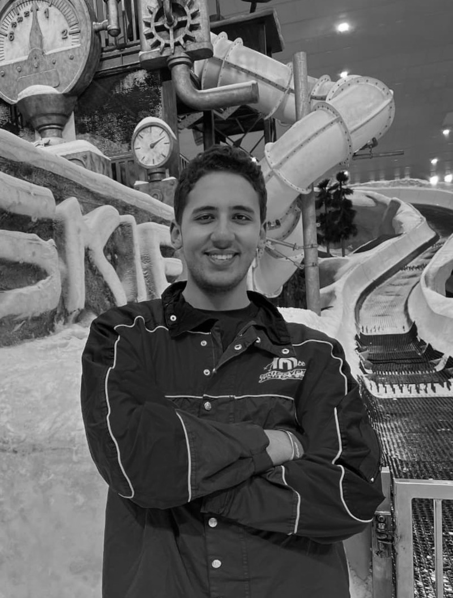

medical student · writer · advocate
Ahmed
Magdy
Medicine, and the things we don’t say out loud.

medicine · advocacy · tastemedicine ✳ the unspoken ✳ taste ✳ grand rounds ✳ advocacy ✳ research ✳
(01)
Contents
an overview of the brief
(02)
Numbers
proof of work so far
7organ systemsEach one tied to a case, a talk or a study.
5tutorials taughtSlide decks for surgery, medicine, pediatrics and gynaecology.
5grand rounds and postersPresented across semesters 2 to 5.
2studies in progressMultiple sclerosis awareness and a cardiology drug comparison.
featured — out loud
Reducing unnecessary C-sections
72.2%
C-section rate in 2021, up from 51.8% in 2014 and 27.6% in 2008.
“Silence is not neutral.” 🍉